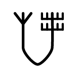
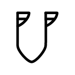

Sign
M342
Looks like: jar with two handles turned outward at the rim
Adapted from the field-cady sign descriptions (Parpola 324). This describes the picture, not the meaning: a sign that looks like a fish may stand for a sound or another word.
Appears in 959 texts (1,395 uses), mostly on seals at Mohenjo-daro; usually ends a text. In the larger ICIT corpus its Wells equivalent W740 is in 1,302 texts, including at Dholavira.
Project finding: Validated closer: ends texts Held up
Where it appears 959
Counts are distinct texts in the Mahadevan 1977 concordance (a text repeated on many moulded tablets counts once). 1,375 objects in all carry it.
| Object | Texts | Share |
|---|---|---|
| Seal | 728 | 76% |
| Sealing | 126 | 13% |
| Tablet | 43 | 4% |
| Copper tablet | 27 | 3% |
| Pottery | 20 | 2% |
| Other | 15 | 2% |
| Site | Texts | Share |
|---|---|---|
| Mohenjo-daro | 604 | 63% |
| Harappa | 246 | 26% |
| Lothal | 44 | 5% |
| Kalibangan | 32 | 3% |
| Chanhu-daro | 22 | 2% |
| Other sites | 8 | 1% |
| West Asian finds | 3 | 0% |
| Where | Uses | Share |
|---|---|---|
| First sign | 6 | 1% |
| Inside | 285 | 30% |
| Last sign | 672 | 70% |
| Whole text | 1 | 0% |
Position counts use only texts with no damaged passage (964 uses).
In the ICIT corpus (Wells numbering)
W740: 1,302 distinct texts, 1,928 uses.
By object: seals 825, tablets 316, pottery 57, sealings 46, copper tablets 40, other objects 18. Top sites: Mohenjo-daro 624, Harappa 462, Dholavira 48, Lothal 39, Kalibangan 35, Chanhu-daro 27.
Variants
Wells (ICIT) equivalent: W740.
Looks alike but used differently (probably a separate sign):
 M343drawing similarity 0.96, context similarity 0.37
M343drawing similarity 0.96, context similarity 0.37- M344drawing similarity 0.94, context similarity 0.38
 M345drawing similarity 0.91, context similarity 0.34
M345drawing similarity 0.91, context similarity 0.34 M347drawing similarity 0.82, context similarity 0.26
M347drawing similarity 0.82, context similarity 0.26
M348drawing similarity 0.67, context similarity 0.24
Pairs from the prior project’s allograph model (image × distribution, signs with at least 8 uses).
Merged with other signs in alternative sign lists (used to test whether findings survive):
Neighbours and fixed pairs 22
Comes before
Signs read directly before or after it, counted in distinct texts, never across a line break or damage.
Fixed pairs
- M347M34285 texts. M347 is followed by M342 97% of the time; M342 follows M347 9% of the time.
 M8M34271 texts. M8 is followed by M342 92% of the time; M342 follows M8 7% of the time.
M8M34271 texts. M8 is followed by M342 92% of the time; M342 follows M8 7% of the time.- M342
 M167 texts. M342 is followed by M1 25% of the time; M1 follows M342 79% of the time.
M167 texts. M342 is followed by M1 25% of the time; M1 follows M342 79% of the time.  M48M34248 texts. M48 is followed by M342 56% of the time; M342 follows M48 5% of the time.
M48M34248 texts. M48 is followed by M342 56% of the time; M342 follows M48 5% of the time. M149M34227 texts. M149 is followed by M342 66% of the time; M342 follows M149 3% of the time.
M149M34227 texts. M149 is followed by M342 66% of the time; M342 follows M149 3% of the time. M169M34227 texts. M169 is followed by M342 54% of the time; M342 follows M169 3% of the time.
M169M34227 texts. M169 is followed by M342 54% of the time; M342 follows M169 3% of the time. M294M34225 texts. M294 is followed by M342 57% of the time; M342 follows M294 3% of the time.
M294M34225 texts. M294 is followed by M342 57% of the time; M342 follows M294 3% of the time. M194M34224 texts. M194 is followed by M342 60% of the time; M342 follows M194 2% of the time.
M194M34224 texts. M194 is followed by M342 60% of the time; M342 follows M194 2% of the time.
At least 5 texts, and one sign takes the other at least half the time.
Fixed sequences in the functional reading
- M347 M342Formula, 63 development texts, grade B. Recurrent fixed unit; meaning unknown.
- M342
 M176Register, 57 development texts, grade A. Tablet/rod ending (jar + document-type clitic).
M176Register, 57 development texts, grade A. Tablet/rod ending (jar + document-type clitic). - M342 M1Formula, 52 development texts, grade B. Recurrent fixed unit; meaning unknown.
- M8 M342Formula, 51 development texts, grade B. Recurrent fixed unit; meaning unknown.
- M48 M342Formula, 39 development texts, grade B. Recurrent fixed unit; meaning unknown.
- M294 M342Formula, 20 development texts, grade B. Recurrent fixed unit; meaning unknown.
- M149 M342Formula, 20 development texts, grade B. Recurrent fixed unit; meaning unknown.
 M296 M342Formula, 19 development texts, grade B. Recurrent fixed unit; meaning unknown.
M296 M342Formula, 19 development texts, grade B. Recurrent fixed unit; meaning unknown.- M348 M342Formula, 14 development texts, grade B. Recurrent fixed unit; meaning unknown.
 M135 M342Formula, 13 development texts, grade B. Recurrent fixed unit; meaning unknown.
M135 M342Formula, 13 development texts, grade B. Recurrent fixed unit; meaning unknown.
M358M342Formula, 11 development texts, grade B. Recurrent fixed unit; meaning unknown.- M342
 M139Formula, 10 development texts, grade B. Recurrent fixed unit; meaning unknown.
M139Formula, 10 development texts, grade B. Recurrent fixed unit; meaning unknown.  M193 M342Formula, 7 development texts, grade B. Recurrent fixed unit; meaning unknown.
M193 M342Formula, 7 development texts, grade B. Recurrent fixed unit; meaning unknown. M128 M342Formula, 6 development texts, grade B. Recurrent fixed unit; meaning unknown.
M128 M342Formula, 6 development texts, grade B. Recurrent fixed unit; meaning unknown.
Published readings 6
- Mahadevan · 1970Not tested on its own
-an, Dravidian masculine singular suffix (1970); later ‘priest/offering’ title contrasted with military arrow
Mahadevan 1970 ‘Dravidian parallels in proto-Indian script’ JTS 2; Jyothibabu review
- Mukhopadhyay · 2019Not tested on its own
phrase-final functional sign of a ‘formalized data carrier’ (not a name suffix)
- Mukhopadhyay · 2019Testable, not yet run
members of a class are mutually exclusive logograms (a paradigm: one slot, one filler)
doi.org (logographic-nature section) · test record
Atlas 7.4 tested graphic modifiers, not these classes. Her counts (crop signs in 162 and 137 lines, never together; no line with two PPF signs in 309) were never put under a null.
- Wells (as reported by Rao 2018) · 2015Tested, see detail
volumetric measure of about 40 L; a related sign about 160 L
arxiv.org (citing Wells 2015) · test record
experiments/m342_offsite (untestable, leans against), experiments/m328_measure (dead), self_label (jar rarer on jars).
- Kenoyer · 2020Tested, see detail
pre-Mature post-firing pot marks: owner or user marks that became script signs
experiments/potters_marks (descriptive; frame vs core OR 1.26, p = 0.39).
Yajnadevam’s sound value
- Yajnadevam · 2024Did not hold
an
Yajnadevam 2024 ‘A cryptanalytic decipherment of the Indus script’; per-sign key from yajnadevam/lipi xlits.csv via sources/field-cady_indus_valley_script_corpus/xlits.csv · test record
Part of a 714-value sound key that scores no better than keys fitted to noise (atlas 1.1).
From proposals.json and CATALOGUE.csv. A claim is listed under every sign it names.
Project tests 48
Established results
- Validated closer: ends textsHeld up
Kept its class in 100% of bootstrap resamples; the Wells-list grammar agrees.
Role in the text
- Positional class
- Closer (bootstrap stability 1.00) Grammar
- Functional reading
- CLOSER 1.00. Closing word (jar); marks title/office-type legends. final 72% dev, also in L-R texts (structure §1); texts with jar recur across cities, replicated (context Q3) Functional reading
Role names such as opener or noun are labels for positions, not tested meanings.
Mentioned in 47 result files
- Novel methods from other fields: results14 lines. “…s “jar + strokes inside” do not behave like the jar. M343, M344 and M345 share no more context with M342 than chance (cosine p = 0.36–0.89), almost never swap with it in identical frames (1 substituti…”
- Functional reading: a role grammar that “reads” every Indus text without phonetics13 lines. “Role grade A: 38 (openers M267/M391, M99, jar M342, M176, M1, M211, M169, M328, strokes, M343/344/345, M403).”
- A positional grammar of the Indus seal text12 lines. “Closer: M342 (the “jar” sign) and a few others end texts. A closer is followed by end of text 71% of the”
- Potter’s marks and the frame signs (Fable 5.2 plan 2, item 7)11 lines. “M342 (the “jar” closer) and M347 were already in use before the Mature phase, as graffiti scratched on pots. Kenoyer (2020) shows M342 on sherds from Harappa Period 1 (Ravi, fig. 6a) and Period 2 (Kot…”
- Copper tablets: calendar series, tallies or amulets?8 lines. “Numerals are on 19 of 37 types, but no two types differ only by a numeral. Only 3 minimal pairs exist at all (M348 / M358 / M53 + M342), and none involves a numeral: 0 of 3, p=1.”
- Structure of the Indus texts: direction, inventory, positional classes, segmentation, grammar8 lines. “…in their labelled direction, these texts behave like R-to-L texts, not like mirror images of them. M342 (the jar) is final in L-to-R texts too: 33 last vs 3 first in M77, 36 vs 2 in ICIT. Our data ca…”
- Internal phonetics: does Indus spelling variation leak sound values?7 lines. “…re decomposition 3/50 planted triples (16/50) 2.9 (5.0) spurious triples per corpus 1 triple (M12 ↔ M342 M176) against 6.7 in Indus-bigram corpora. 0 events for every graphic candidate M12 triple abse…”
- M342 (jar sign) off Mohenjo-daro: vessel marker or not? (board #45)7 lines. “M342 (jar sign) off Mohenjo-daro: vessel marker or not? (board #45)”
- Negative atlas: Indus routes closed or found undecidable7 lines. “Jar sign M342 as a vessel or storage marker”
- Phonetic grid (automated Kober triplets + Ventris grid)4 lines. “…what follows M267-M99, another what follows M391-M99 and M293-M123-M343. A third is a closer block (M342, M211, M347, M169, M162, M15, …) and a fourth a post-closer block (M176, M12, M1, M328, M130, M…”
- Red team of seal_fate H2 (board #37): closer excess on Mohenjo-daro "?"-dimension seals4 lines. “The one remaining crumb: the jar sign M342 alone stays about 1.5x high under every null (p = 0.012-0.024 raw). The other six closers are *under*-represented (0.8x), and M342 was not a pre-registered t…”
- Is there a “weight” sign? (meaning_claims rule 2)4 lines. “This counts for nothing. The data was already seen, the gate there detects only 25%, and the negative control failed: the jar M342 is also “enriched” under the same null (p = 0.003).”
- Context and meaning: which signs go with non-textual context?3 lines. “M342-M176 / W740-W400 (jar + post-jar suffix) Ending of the tablet and rod formula (administrative token), not of seal names Rods: M77 9 vs 0.5 (q=8e-8), ICIT 7 vs 0.7 (q=0.001). ICIT tablets 99 vs 59…”
- Pre- vs post-firing vessel marks (Fable 5.2 plan 4, item S1)3 lines. “…opens longer texts. M343 is 3/25 vs 6/384 (p = 0.013), and M267 is 3/25 vs 11/384 (p = 0.047). Jar M342 is 1/25 painted against 70/384 graffiti and 8/52 stamped. Caveats: I read Kenoyer’s sign list b…”
- Project-wide multiple-testing ledger3 lines. “rod formula M342-M176 (red team); W407 on copper; W740-W400 on tablets 1e-6; 1e-9; 1e-5 1e-5; 2e-8; 1e-4 <5e-5 <0.003”
- Literature map: Indus script research, with emphasis on 2015-20263 lines. “…t 4.6 signs). It has roughly 400-700 signs depending on how allographs are split, and the jar sign (M342) usually ends a text. Seal texts follow a template: opener, unique middle, title/closer. Stroke…”
- Pair graph, numeral distributions, long texts (Fable 5.2 plan F1, F2, F6)3 lines. “Short M59 (3, 6, 12, 4) and the jar M342 (7 or 12) sit in between: a few favoured values. Jar after short strokes was 7 or 12 in 4/4 held-out cases (p = 0.004, n tiny).”
- reg_chrono: does sign use change with decimal depth inside one site?3 lines. “Jar M342: flat at both sites (Mohenjo-daro p = 0.51, n = 224; Harappa p = 0.38). At Mohenjo-daro a shift of odds ratio 2 is excluded (power 0.92). At Harappa power is 0.79.”
- reg_harappa: do the Mohenjo-daro findspot results hold at Harappa?3 lines. “Jar M342: p = 0.54”
- Proskouriakoff test: object fate vs sign content (board #33, N1)3 lines. “…prints a dimension as "?" (a proxy for breakage) carry about 1.7x more closers (mostly the jar sign M342) than random fragments of intact seals (Holm p = 0.018). But it was meant as the replication of…”
- Chanhu-daro follow-up: results2 lines. “Leave-one-sign-out failures. Seven conditions had no valid draw: M342, M87 and M93 vs Harappa; M342, M343, M67, M87 and M93 vs Mohenjo-daro.”
- Dominik 2026: “W090 follows W740 but never W520” (board task #19, M5, agent H4)2 lines. “Bridge (bridge_WM.json): W090 = M1 (“man”), W740 = M342 (jar), W520 = M211 (arrow), W033 = M89, W220 = M59 (fish). W520 tokens adjacent to W033 are excluded, as in the claim.”
- Forward predictions for the surviving leads (board #44)2 lines. “F3 jar M342 on post-firing graffiti ≤ 0.70 × seal-rate expectation (length-aware) RR ≤ 0.70, Poisson p < .05 RR ≥ 1.0 E ≥ 8 retired (failed dry run; RR ≈ 1 at all sites)”
- Genres from scratch: unsupervised text types checked against objects (board #34, N2)2 lines. “an “M267/M391 opener … M342” long formula, 98% seals or sealings;”
- HARP prediction pack (sealed 2026-11-19, before the HARP spreadsheet)2 lines. “C1: jar sign M342 rarer on pre-firing marks (power 1.00).”
- Iconography: what do the signs depict, and does it matter?2 lines. “Closers are not vessels: 2/17, expected 1.4, p=0.42. Besides the jar M342, closers are mostly “tools”, e.g. arrow M211 and comb M176.”
- Language hypotheses: results (historical-linguistics tester, 2026-11-14)2 lines. “P1b 7 + fish = ēḻu-mīn (Ursa Major) P(fish \ 7) raised 1/60 = 1.7%, depleted (binomial p = 0.0025); held-out 0/13. The 7-sign M112 goes with M194/M197 (copper tablets, F7) and M342 refuted”
- Meluhha in cuneiform: an outside anchor for the Indus script?2 lines. “…four signs (M245 alone accounts for 49%), and the home pattern is “doubled sign + closer” (M59 M59 M342, M153 M153 M342). That is logographic doubling, not syllable reduplication like *na-na-sa*.”
- New finds as an out-of-sample test2 lines. “…ly 12 objects are truly new, and only 2 of them have a readable text: the Binjor terracotta seal M1 M342 M1 and the Khirsara graffito M137. None of the 13 frozen predictions (P1-P13) or 7 frozen leads…”
- Grammar of the Indus number signs (Fable 5.2 plan 3, R1: the Proto-Elamite method)2 lines. “…xed formula, not a unit word. The common number + X + Y frames end in the jar closer (number, head, M342), which is the seal template, not a Linear B entry. Tall and short numerals side by side have n…”
- Parpola rules 3 and 4: vēl as a fish stand-in, and Murukan’s fixed partners2 lines. “…ool, with 13 different left neighbours (counting the text start). Most end in the formula “M403 M87 M342”.”
- Self-labelling objects: do signs depict the object they are written on?2 lines. “The jar sign is rarer on jars. M342, which blind raters call a jar, appears in 70 ICIT pottery-graffito texts against 124 expected under the within-site null. It is also low in M77 dev (23 vs 32) and…”
- One-to-many substitution (X YZ): does a single sign ever trade places with a 2-3 sign spelling?2 lines. “M12 = M342 M176 4 – 0.02 5123 \ \ 8201 closer ↔ closer + post-closer (internal_phonetics T3); held-out k=3, q=0.01”
- Administrative archaeology: relational readings without sounds1 line. “…9-M161, M387-M59, M171-M59), openers (M267, M293, M391, M150, M216) and register signs (M176, final M342, final M211) were tested against excavation area within site × object type × length strata:”
- R7: are any signs tied to a craft or facility?1 line. “…weights are recorded in the find-rich squares, so every common sign looks “enriched” there (the jar M342: 192 vs 118). The frozen null permutes unit labels and does not correct for how many finds a un…”
- Consensus corpus: the nine headline tests at the real transcription error rate1 line. “missing/extra M342 (jar) - 5 2.0% 2.0%”
- Detached signs: a layout class, but not a class apart from the text1 line. “Check whether other closers (M211, M176, M342) are also set on their own line on large faces, beyond what face size predicts. If they are, detachment is a layout rule for closers and not a sign class.…”
- Genre alignment: matching Indus seal slots to Mesopotamian seal-legend slots1 line. “The Indus closer (jar M342 and other closers) does not line up with “servant of”. The primary prediction (P1, closer = arad “servant of”) failed against both references. Ur III puts the closer nearest…”
- Grammar: a validated positional grammar of the Indus seal text (fable plan 6, part B)1 line. “closer 7 14.1% M342, M211, M15”
- Meaning claims from culture, archaeology and history1 line. “Measure and vessel ideas (M328, M342, the Wells 40-litre jar) were closed by m328_measure, m342_offsite and self_label.”
- What kind of quantity do the short-stroke numerals count? (Fable 5.2 plan 2, item E3)1 line. “…behave as written numbers above 12, and whether the 12 sign is lexical (fixed partners such as jar M342 and fish M59) or a ceiling. A larger corpus (Fuls 2023) is needed for n.”
- Red team: attacks on the project’s positive claims1 line. “M342-M176 on rods (M77) 9 / 0.5 6 / 0.34 1e-6 MD only”
- Red team: do ticked fish really cluster by block at Mohenjo-daro?1 line. “Texts: M152 M99 M53 M59 M87 M60, M87 M59 M71, M258 M342 M87 M60 M87 M272, M100 M17 M60.”
- redteam_size: is the “small seals keep their closers” omission order just “texts have one closer”?1 line. “Example: M267 M99 M67 M205 M245 M342 = T4’s W817 W002 W240 W495 W615 W740.”
- Do the ranked findings survive other sign lists?1 line. “lump_jar_man 378 Jar M342 = M343-M345; man, bearer, man+stick, man+jar and bird groups.”
- Sign mapping by two blind agents, and the stroked-jar test (prereg docs/prereg/signmap_figfish_strokedjar.md, sealed 2026-11-24 03:58:03Z; addendum 1 03:59:53Z)1 line. “The same short-mark effect that makes the plain jar M342 rarer on jars (self_label: pottery marks lack the seal formula) may also depress M343.”
- Typology: are Indus name cores spelled with syllables or built from whole-word signs?1 line. “…csv notes “middle is a motif”) and W467 W550 W001 W740 W740 (no find-spot). W740 is the jar closer (M342). Doubling the jar is not syllable reduplication.”
Example texts 3
Text 1005 · Mohenjo-daro · seal · M296 M342


Text 1529 · Mohenjo-daro · ivory/bone rod · M67 M103 M403 M342 M176


Text 1602 · Mohenjo-daro · sealing · M134 M86 M99 M65 M192 M347 M342
Signs in reading order, first sign on the left. Text numbers are Mahadevan’s (1977). / marks a line break, … a damaged passage.